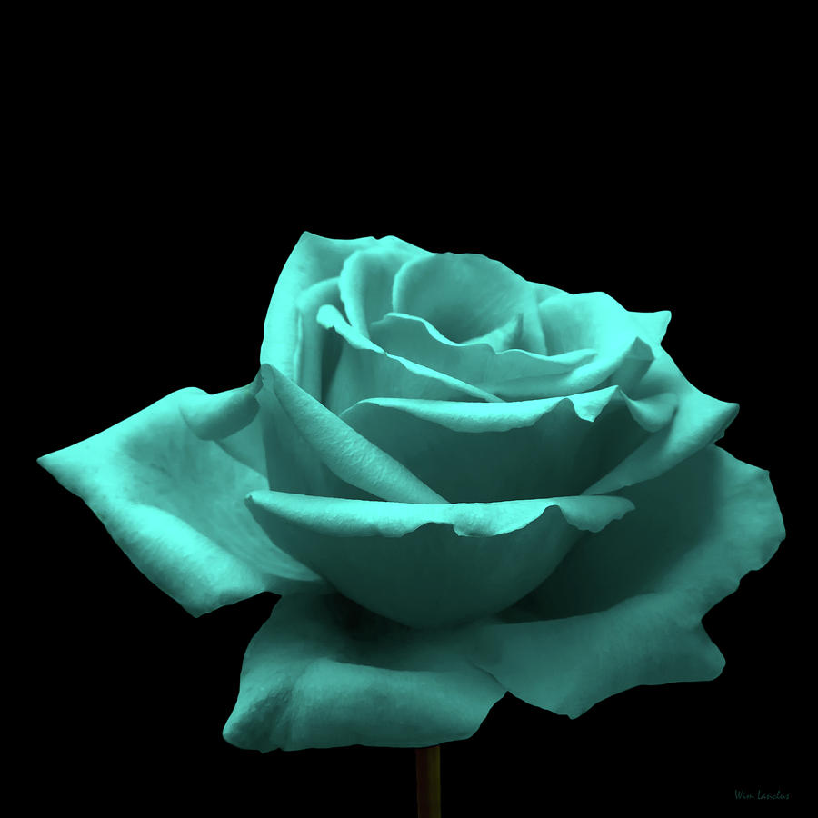

Turquoise Rose
A rose that does not exist in nature, a turquoise or blue rose represents mystery, the impossible, or the unattainable.
Turquoise roses impart a subtle meaning of calming serenity due to the presence of green in their hue, as well as the idea of hope and turning a corner after a difficult time. They are often used to show friendship and support during both sad and happy occasions.